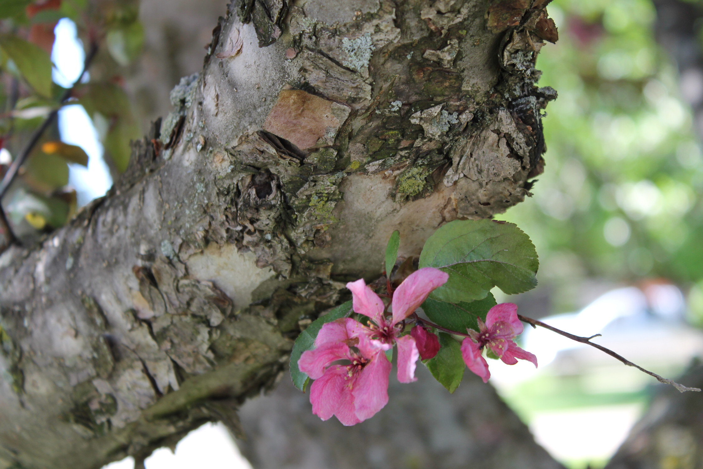

« Previous Next » 
My mom has a strange fascination with cherries. She doesn't really eat them much outside of the occasional maraschino cherry in a cocktail or on an ice cream sundae, but I think she thinks they're pretty. We have a cherry tree in the front yard of my parents’ house. The cherries that sprout from it aren’t actually edible, but the cherry blossoms bring a little brightness to the front yard every spring. I snapped this photo early one spring. The tree wasn’t in full bloom yet but a few sprouts had started popping up.